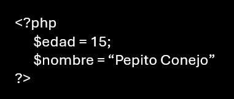
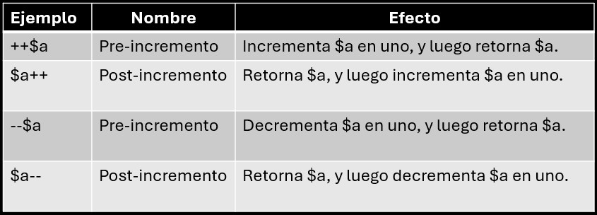
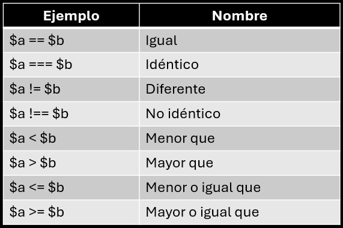

Una variable de un lenguaje de programación es un elemento que permite almacenar información. En los lenguajes de programación las variables se identifican por su nombre. En PHP el programador puede dar el nombre que quiera a las variables, con algunas restricciones:
Para guardar un valor en una variable se utiliza el operador de asignación (=) escribiendo a la izquierda únicamente el nombre de la variable y a la derecha el valor que queremos guardar.
Una constante es un identificador (nombre) para un valor simple. El valor no puede ser modificado durante el guion.
Un nombre de constante valido comienza con una letra o un carácter de subrayado (sin signo $ antes de el nombre de la constante).
Para crear una constante, usa la función const:
Si tomamos de las matemáticas que un operador es un símbolo matemático que indica que debe ser llevada a cabo una operación especificada sobre un cierto numero de operadores, tendremos que en todo el lenguaje de programación encontraremos muchos equivalentes y PHP no es la excepción y por su semejanza de C++ o Java tendremos que a un programador ya incluido en estos lenguajes no se le hará nada complicado.
A continuación, se muestran los diferentes tipos de operadores que se utilizan en PHP.
PHP soporta operadores estilo C de pre- y post-incremento y decremento.
Los operadores de comparación, como su nombre lo indica, permiten comparar dos valores.
